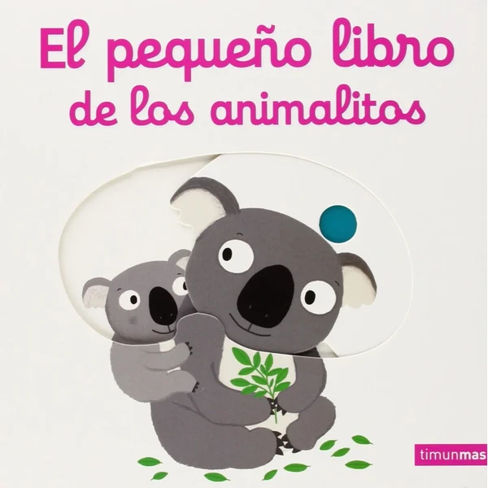

👶 2 años
El pequeño libro de los animalitos
Un libro de cartón con solapas y lengüetas que esconden animales, pensado para que el niño descubra qué hay detrás de cada mecanismo.
⭐
¿Por qué nos gusta?
- ✔Solapas y lengüetas para descubrir animales.
- ✔Cartón resistente para manos pequeñas.
- ✔Formato compacto, fácil de manejar.
💬
Lo que más destacan las familias
Lo que más suele gustar es la sorpresa de descubrir qué animal se esconde bajo cada solapa, algo que invita a repetir la lectura una y otra vez. También se valora el cartón resistente, que aguanta bien el tirón de manos pequeñas.